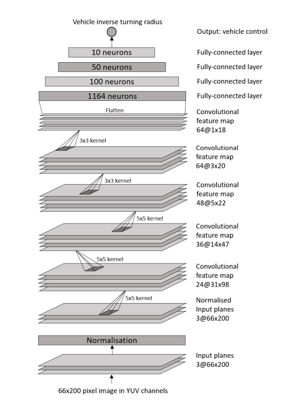
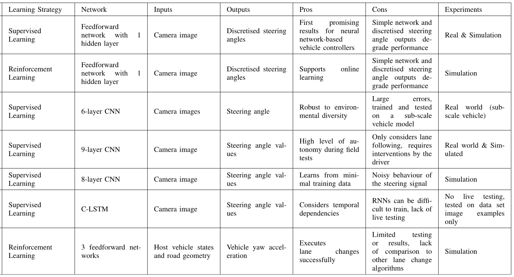
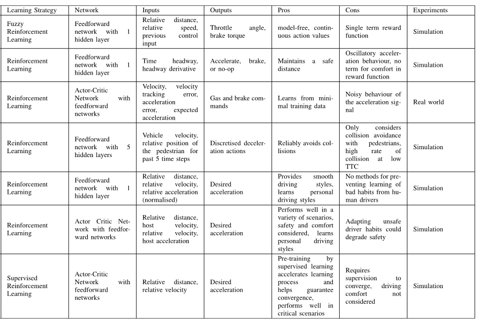
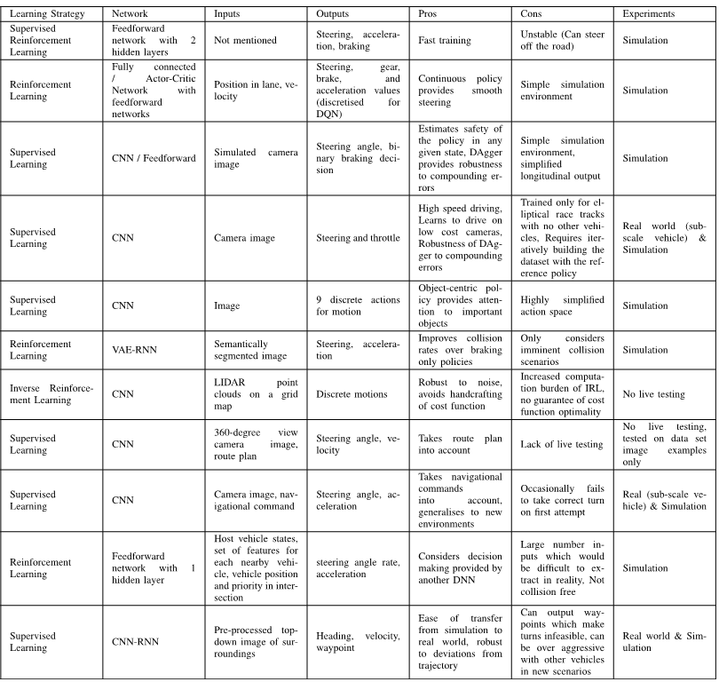

本文主要是对文章《A Survey of Deep Learning Applications to Autonomous Vehicle Control》的整理
期刊：IEEE TRANSACTIONS ON INTELLIGENT TRANSPORTATION SYSTEMS
影响因子：6.3
对于自动驾驶，设计一个满足所有驾驶场景的控制器是一个非常大的挑战因为真实的环境非常复杂且很多场景没有办法去测试。然而，深度学习方法展现出了很好的前景，对于复杂和非线性控制问题，它不光有非常好的性能，而且学习出来的规则很容易迁移到另一个新的场景中。这篇论文对近年来所有用深度学习方法解决自动驾驶问题的文献做了综述，自动驾驶涉及了多学科的内容和方法，该文主要综述控制问题而非感知问题。分析了优缺点，给出了存在的挑战。
Introduction
- 自动驾驶解决的问题：交通拥挤，污染，安全。
- 早期的自动驾驶系统的研究从1980s开始，项目：DARPA Grand Challenges。Adaptive Cruise Control(ACC)。早期的自动驾驶系统严重依赖高精度的传感器数据，例如激光雷达，控制器是通过rule-based的方法进行设计的，需要在仿真后进行人工调参和现场测试。这个方法的缺点就是需要人工调参，而且调完的参数不具有通用性，不能很容易的迁移到另外新的场景去。而且驾驶问题一般是非线性问题，通常无解析解。
- 现阶段，深度学习的方法在自动驾驶上取得了巨大的成功，CNN只需要摄像头的数据作为输入，无需昂贵的雷达传感器，可以无需另外的感知模块，直接做成端到端的结构。
- 深度学习的方法可以通过数据去迭代学习，无需人工调参数，可以方便的迁移到另外的场景。
- 不同的方法有不同的控制对象，一种控制器的设计是high-level的，例如设计控制对象为车辆的加速度，而底层使用传统控制器进行控制。还有一种是类似于端到端的思想，从观测到的状态直接映射到底层的控制信号。
Review of deep learning
监督学习
深度学习的目标是通过训练，更新神经网络中的参数
优点：
- 训练收敛快
- 不需要设计rule
缺点：
- 监督学习属于offline的方法，训练的时候，网络的输出不会影响真实系统的状态，但是一旦部署，会影响未来的状态
- 若训练的和实际的状态的分布不同，则网络输出的结果会出错。
- 如果要训练一个较为通用的控制器，则需要大量不同场景下的数据。
强化学习
通过trial and error，训练模型，目标是最大化累计回报。
优点：
- 不要要labelled的数据
- 可以很容易的迁移到新的场景
缺点：
- 训练效率非常低
强化学习算法主要分为三类：value-based，policy gradient 和 actor-critic。
value-based：估计价值函数\(V(s)\)，它代表在一个给定状态的平均价值回报。如果系统状态转移矩阵\(P\)已知，则可以根据状态转移概率的大小来选择动作。但是对于现实中大部分的场景下，环境模型是未知的，也就是说\(P\)未知，则状态动作值函数\(Q(s,a)\)，代表了在一个给定状态\(s\)下，执行动作\(a\)的价值，这时，最优策略可以通过例如贪心算法来最大化\(Q(s,a)\)，
缺点：
- 不能保证学习到的策略是最优的。
policy gradient：不估计价值函数，直接用一个参数化模型对策略进行建模，模型的输入是\((s_t, a_t)\)，模型的输出是\(a_t\)，比较类似于一种端到端的思想。
缺点：
- 预测的策略梯度存在较高的方差
actor-critic：讲价值函数和策略函数结合起来。
深度学习的数据集和工具
- 自动驾驶数据集：KITTI benchmark suite,Waymo Open, Oxford Robotcar, ApolloScape, Udacity, ETH Pedestrian, Caltech Pedestrian. 更详细的介绍可以参考：H. Yin and C. Berger, “When to use what data set for your self-driving car algorithm: An overview of publicly available driving datasets,” in Proc. IEEE 20th Int. Conf. Intell. Transp. Syst. (ITSC), Oct. 2017,pp. 1–8.
- 用于自动驾驶计算的平台：NVIDIA Drive PX2，Altera's Cyclone V。
Deep learning application to vehicle control
横向控制系统
- 1989年，Autonomous Land Vehicle in a Neural Network(ALVINN)，使用一个前馈神经网络，输入维度：30x32，一个4维的隐含层，输出层维数：30。每个输出的维度各自代表了一个可能的离散的转向动作。该系统利用摄像头的输入和司机转动方向的动作来训练。为了防止对于最近输入的偏差(例如一个网络一直在被训练右转，那它倾向于更多的向右转向)，该系统利用了一个buffer，也就是说讲以前遇到过的情景，放到buffer中，继续训练(有点强化学习中Replay Buffer的意思)。

- 各种CNN改进的版本，还有利用LSTM，RNN的，基本上就是换了一个网络结构，原理上和第一个一样，具体各种技术的比较见下图：

- 车道变换问题：用DQN解决，上表中的最后一个，\(Q\)函数由一个包含3个隐含层的前馈神经网络去估计。
- 最近的研究趋势：利用更深的网络去训练模型。
- 现阶段的研究都是不同的任务设计不同的控制系统，例如横向，纵向，变换车道等各自有一个单独的网络，如何能够训练出一个网络实现多种任务值得研究。
- 当前的研究基本上是在仿真环境中，需要实际环境中进行验证。
纵向控制系统
大多用强化学习解决。
缺点：
- 费时间，所以出现了将深度学习和强化学习结合的方法。

横向纵向控制系统仿真
对于自动驾驶的汽车，需要同时控制横向和纵向的状态。

Challenges
虽然取得了很多进展，但是离商用还是有很大差距。如果需要大规模商用，还是要克服很多挑战。
计算资源
- 训练需要大量的数据和时间，尤其是对于强化学习算法，会造成可能的实时性差的问题，现在有通过将监督学习和强化学习相互结合的方法，监督学习提高训练效率，强化学习提高适应性，然而，获取各种场景下的训练数据不现实也比较困难，所以各个车企合作共享数据可能是一个最快的办法，但是这显然不现实。
- 训练的数据需要多样性，对于不同场景，都需要有大量的数据，否则，训练出来的模型不精确或对于某些场景过拟合。
- 连续状态和连续动作会导致计算复杂度增大，维数爆炸。
- 可以使用多个learner来降低训练时间。
- 进化算法来寻优。
- 删除无用的训练数据。
网络结构
- 选择网络结构非常困难，更少的神经元会导致系统性能下降，更多的神经元会导致训练数据过拟合因此通用性较差，且计算时间增加。
- 网络参数的选择没有通用的方法，一般都是通过试错或者启发式算法，但是这样计算时间会增加。
- 解决方法：在一个方法集上或者使用基于模型的方法进行训练。Coordinate Descent，Grid Search，Random Search。
目标设计
- 对于强化学习算法来说，Reward函数比较难设计。
- 通常一个agent在一个时刻需要执行多个action，所以对于横向和纵向同时控制，当获得了一个reward，你很难知道到底是哪个action的结果。解决方法：Hybrid Reward Architecture，就是将Reward分解出来，对于各个模块各自学习独立的价值函数。
适应性和通用性
- 对于不同的环境，需要找到一个可通用的算法。
- Dropout技术，随机选择一些神经元并且只更新其他未选择的神经元。
校验和验证
- 验证算法的性能需要大量的资金支持并且不要政府政策的支持，且需要花费大量的时间。
- 尽管仿真有很多种优势，模型的误差是一个非常关键的问题。
- 要确保验证数据中有"bad"场景。
安全问题
- 解释性较差。不能确保安全。
- 安全问题还要考虑到周围车辆的状态。
- 安全必须要再真实世界中保证。
- 有方法将控制器结构分为两部分，一部分是可学习部分，另一部分是不可学习部分，其中不可学习部分就是做一个安全的限制。
- 也有将传统控制器和强化学习相结合的方法，来确保稳定性和鲁棒性，见文献： X. Xiong, J. Wang, F. Zhang, and K. Li, “Combining deep reinforcement learning and safety based control for autonomous driving,” 2016, arXiv:1612.00147. [Online]. Available: https://arxiv.org/abs/1612.00147
- 需要对系统输入恶意输入测试来确保网络的安全。
Conclusion Remarks
论文中对我有用的内容
论文最后一部分综述了当前存在的挑战，大多是深度学习问题的共性问题，对于无人驾驶，不具有代表性，像安全问题，利用深度学习做控制饱受控制届的批评，但是在某些场合，深度学习做控制的确取得了较大的成果，但是在某些安全限制条件较高的场景，例如自动驾驶，如何来确保深度学习算法的稳定性和安全性是一个亟待解决的问题。控制领域中的稳定性分析，鲁棒性分析都需要非常精确的模型才能分析，但是自动驾驶显然是一个非线性的，且得到精确模型的一个任务，所以有没有其他方法来分析这个稳定性和鲁棒性，还是说像文章说所提到的一篇文献，对安全问题在控制器中进行限制，深度学习控制器若不在这个安全限制中，则才去进一步措施，这样不用从控制领域的角度分析稳定性。
其他参考资料
文章中写的几篇文献：
- H. Yin and C. Berger, “When to use what data set for your self-driving car algorithm: An overview of publicly available driving datasets,” in Proc. IEEE 20th Int. Conf. Intell. Transp. Syst. (ITSC), Oct. 2017,pp. 1–8.
- X. Xiong, J. Wang, F. Zhang, and K. Li, “Combining deep reinforcement learning and safety based control for autonomous driving,” 2016, arXiv:1612.00147. [Online]. Available: https://arxiv.org/abs/1612.00147